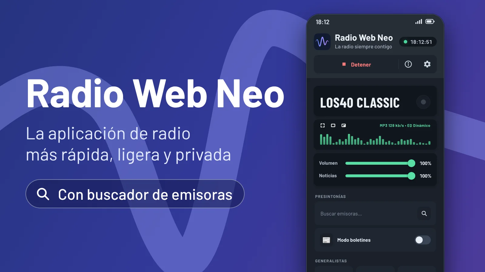
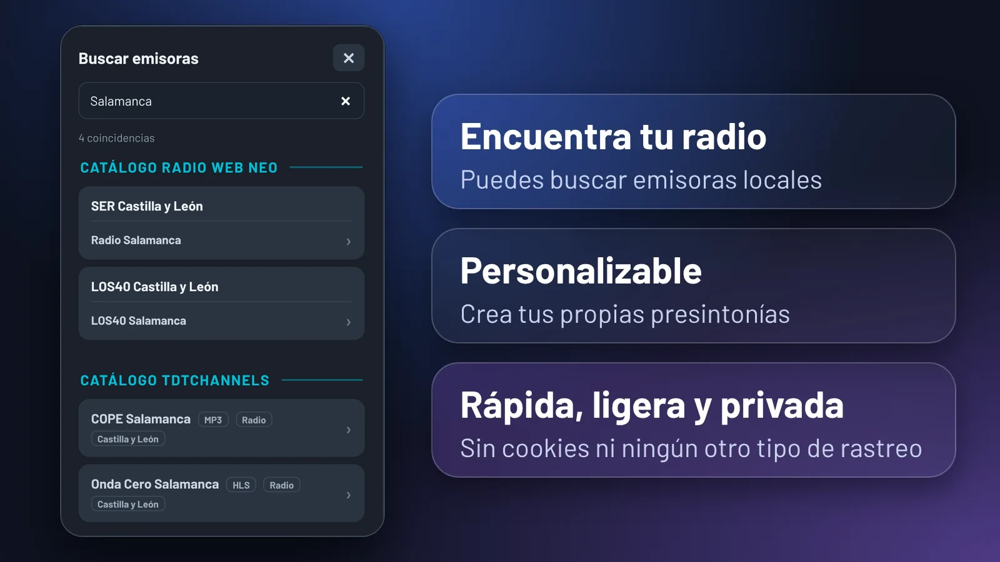

Radio Web Neo

Bienvenido
Un reproductor de radio ligero, rápido y sin rastreos. Pulsa una cadena desde las presintonías para escucharla. Con un clic derecho o una pulsación larga puedes ver sus emisoras. Se pueden reordenar arrastrándolas.

Buscar emisoras
Escribe el nombre de una emisora en el buscador y elige una opción del catálogo. Puedes añadir tu elección a una cadena ya existente o crear una nueva. Si tienes el enlace de sonido, también puedes añadirlo desde los ajustes.

Modo boletines
El modo boletines conecta con las noticias de la SER de 8 a 20 horas. En los Ajustes puedes cambiar esta configuración, así como exportarla e importarla en otros dispositivos.